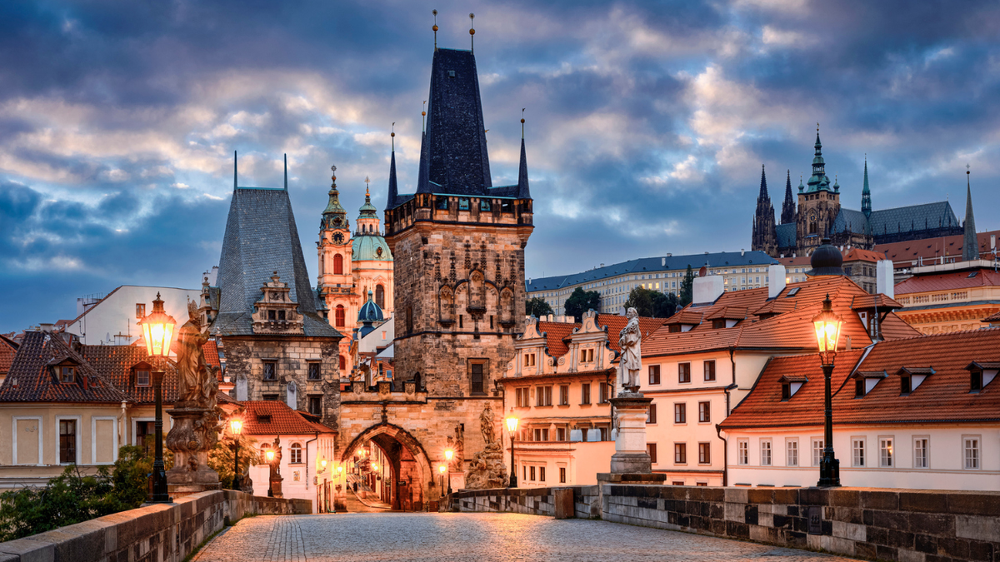
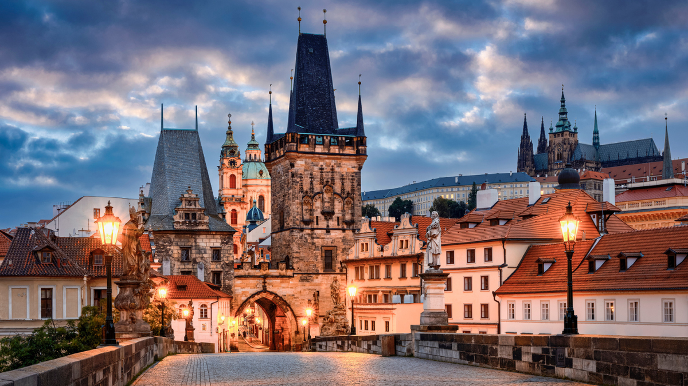

Travel ideas
Prague
- Population: 1.200.000
- Location: Czech Republic, Europe
Prague is a political, cultural, and economic hub of central Europe, with a rich history and Romanesque, Gothic, Renaissance and Baroque architectures.
It was an important city to the Habsburg monarchy and Austro-Hungarian Empire. The city played major roles in the Bohemian and the Protestant Reformations, the Thirty Years' War and in 20th-century history as the capital of Czechoslovakia between the World Wars and the post-war Communist era.
Why is city good?
- Architecture
- Cheap prices
- Good beer
Gallery
 

Vienna
- Population: 2.000.000
- Location: Austria, Europe
The city lies on the eastern edge of the Vienna Woods (Wienerwald)—the northeasternmost foothills of the Alps, that separate Vienna from the more western parts of Austria—at the transition to the Pannonian Basin.
It sits on the Danube, and is also traversed by the highly regulated Wienfluss (Vienna River). Vienna is completely surrounded by Lower Austria, and lies around 50 km (31 mi) west of Slovakia and its capital Bratislava, 60 km (37 mi) northwest of Hungary, and 60 km (37 mi) south of Moravia (Czech Republic).
Why is city good?
- Architecture
- Good food
Gallery

Barcelona
- Population: 1.600.000
- Location: Spain, Europe
Founded as a Roman city, in the Middle Ages Barcelona became the capital of the County of Barcelona. After joining with the Kingdom of Aragon to form the confederation of the Crown of Aragon, Barcelona, which continued to be the capital of the Principality of Catalonia, became the most important city in the Crown of Aragon and the main economic and administrative centre of the Crown, only to be overtaken by Valencia, wrested from Moorish control by the Catalans, shortly before the dynastic union between the Crown of Castile and the Crown of Aragon in 1492.
Barcelona became the centre of Catalan separatism, briefly becoming part of France during the 17th century Reapers' War. It was the capital of Revolutionary Catalonia during the Spanish Revolution of 1936, and the seat of government of the Second Spanish Republic later in the Spanish Civil War, until its capture by the fascists in 1939. After the Spanish transition to democracy in the 1970s, Barcelona once again became the capital of an autonomous Catalonia.
Why is city good?
- Architecture
- Nightlife
- Culture
Gallery